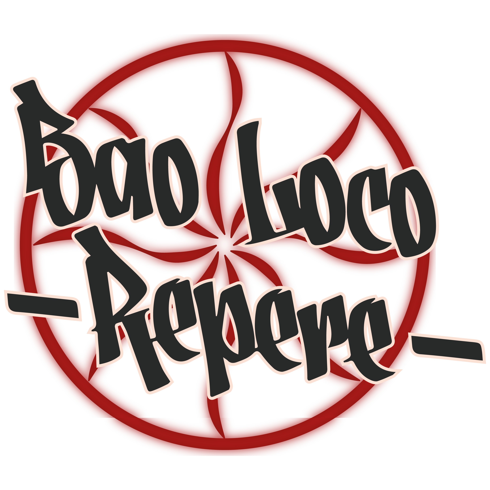
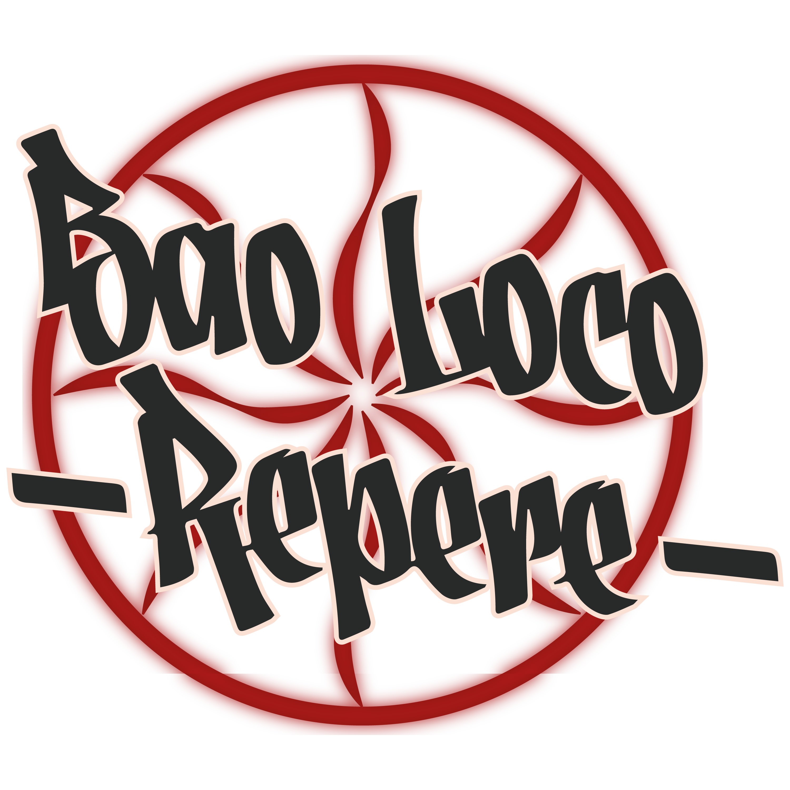
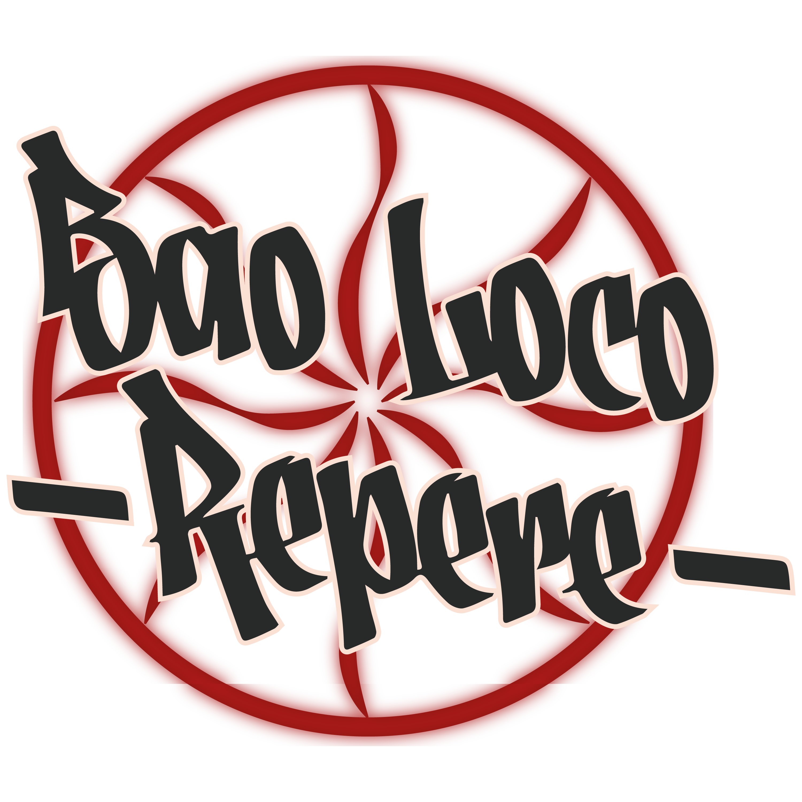
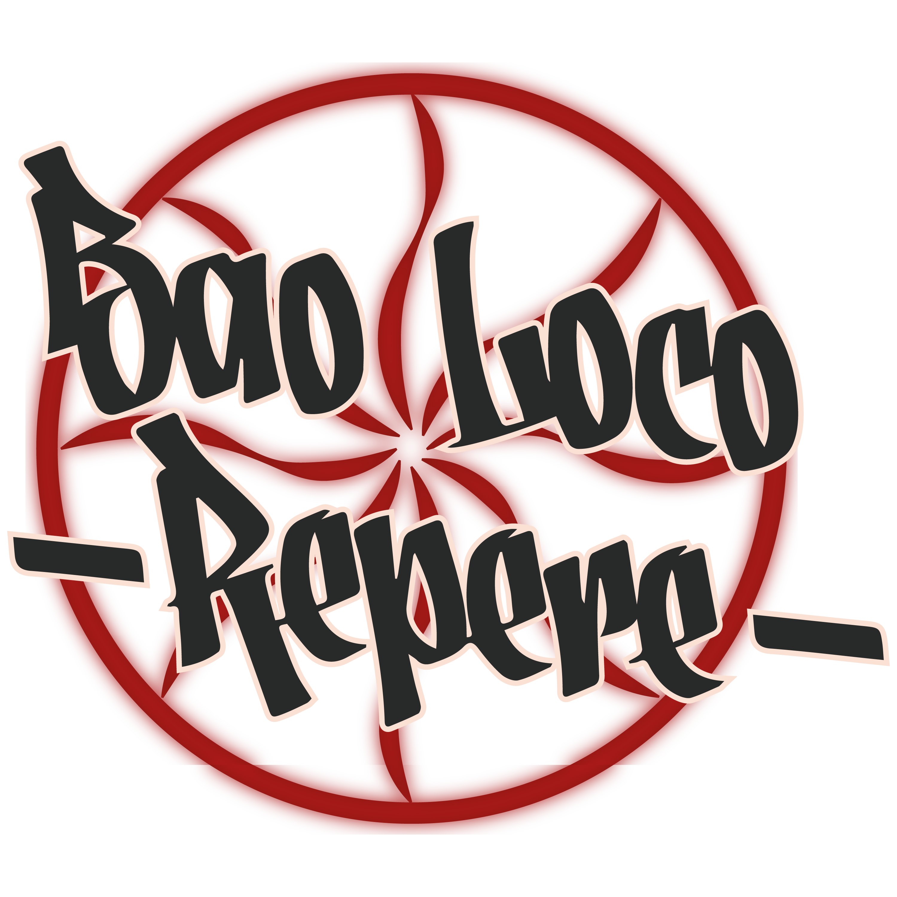

Ici, dans ce repaire discret, l'atmosphère est chargée d'électricité. Les murmures conspirateurs et les regards complices échappent à ceux qui ne connaissent pas le secret de cet endroit. Inspiré par l'esprit rebelle du film culte "Fight Club", cet établissement incarne la rébellion contre la monotonie, la routine, et les conventions.
L'histoire du Bao Loco Repère est celle de son fondateur, un homme au passé mystérieux, dont l'identité demeure une énigme. Comme le protagoniste anonyme de "Fight Club", il a ressenti le besoin de créer un lieu où les règles de la société peuvent être remises en question, où l'on peut se libérer des chaînes invisibles qui nous retiennent.


Chaque bao qui sort de la cuisine est bien plus qu'une simple bouchée. C'est un acte de rébellion, un défi lancé à l'ordinaire. Ces petits pains moelleux renferment des saveurs audacieuses, mariant habilement tradition et innovation. Chaque bouchée est une invitation à embrasser le chaos, à célébrer l'imperfection, à se perdre dans le moment présent.
Mais le Bao Loco Repère offrent bien plus que de la nourriture pour le corps. C'est un lieu de rassemblement pour les esprits libres, les rêveurs et les visionnaires. C'est un endroit où l'on peut échanger des idées, confronter des opinions et tisser des liens authentiques, loin des artifices du monde moderne.


Comme dans "Fight Club", les membres du Bao Loco Repère se reconnaissent à travers un regard complice, un sourire en coin, une compréhension tacite de ce qui se cache derrière les apparences. Ensemble, ils forment une communauté secrète, unis par le désir de vivre pleinement, intensément, sans compromis.
Alors, si vous êtes prêt à vous échapper de la routine, à défier les conventions et à embrasser le chaos, rejoignez-nous dans l'obscurité de la nuit. Venez découvrir l'histoire du Bao Loco Repère, et laissez-vous emporter par le pouvoir de la rébellion, un bao à la fois.